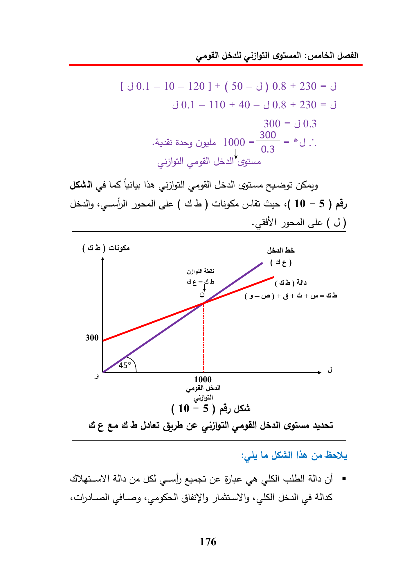

[J0.1-10-120]+(50—-J)08+230=J
J0.1-
110
+
40-J0.8
+
230=J
300
=
J0.3
Bray
1000
en
tee
call
8
LS
Loly
Ne
abt
cele
(Ab)
Gos
«(10
-
5)
ay
(
J)
ciligss
all
bs
(4¢)
(44)
Ate
300
4
7000
Ae
aa
db
Jali
gob
oe
Le
Ge
Lady
Als
Ge
JST
al
area
yo
AS
ata
gi
aliens
Gly
«ISI
176